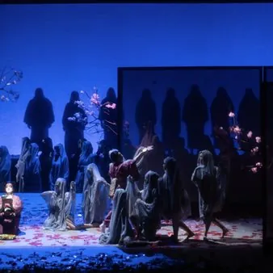

lun 5 ott · dalle 19:00
Lunedì dello Schmidl - "Dietro le quinte di Madama Butterfly"
Riprende il via l'edizione 2026-2027 dei «Lunedì dello Schmidl», il ciclo di incontri e approfondimenti a cura di Stefano Bianchi che il Museo Teatrale da vent'anni offre al pubblico dei cultori della musica e del teatro. L’apertura è dedicata alla presentazione del…
 Indicazioni
Indicazioni
- Costi e prenotazioni
- Costo non indicato · Prenotazione non indicata
- Programma
- Programma da verificare. Apri la fonte ufficiale per orari e possibili aggiornamenti.
- In caso di maltempo
- Nessuna indicazione specifica pubblicata.
- Note
- Acquisito automaticamente dalla fonte.
L’EVENTO
Descrizione completa
Riprende il via l'edizione 2026-2027 dei «Lunedì dello Schmidl », il ciclo di incontri e approfondimenti a cura di Stefano Bianchi che il Museo Teatrale da vent'anni offre al pubblico dei cultori della musica e del teatro. L’apertura è dedicata alla presentazione del documentario «Dietro le quinte di Madama Butterfly» prodotto dalla Sede RAI per il Friuli Venezia Giulia e firmato da Alessandra Zigaina .
Allo “Schmidl” il filmato sarà introdotto dalla stessa giornalista Alessandra Zigaina che dialogherà con Roberto Bonora e Ivano Coviello - rispettivamente Direttore di Palcoscenico e Direttore degli Allestimenti del Teatro Verdi di Trieste - e con il regista Oscar Cecchi . Quando si commenta un'opera lirica si citano sempre i cantanti principali, il direttore d'orchestra e il regista, ma il successo di quello che va in scena è anche il frutto di un incredibile lavoro di squadra di cui non si parla quasi mai. Un lavoro silenzioso, perfettamente sincronizzato e orchestrato che sul palco, nella buca dell'orchestra o dietro le quinte coinvolge decine e decine di professionalità diverse: dai macchinisti ai tecnici delle luci, dal direttore di scena alle sarte, dai musicisti ai coristi, solo, per citarne alcune. E poi, dietro le quinte del Teatro Verdi c'è un mondo, a partire dal complesso sistema di funi, pesi e contrappesi che occupa l'altezza di un palazzo di cinque piani per non parlare dei magazzini, delle sale prova, della sartoria e delle sale trucco.
"Il filmato – spiega Alessandra Zigaina - cerca di raccontare tutto questo dando voce a chi di solito non compare, ma che lavora comunque con grande entusiasmo e professionalità alla costruzione di un sogno”. In questo caso la «Madama Butterfly» prodotta dal Teatro Verdi di Trieste con la direzione d'orchestra di Giulio Prandi e la regia di Alberto Triola. Il filmato, della durata di una ventina di minuti, è l'assemblaggio di tre distinti servizi andati in onda qualche mese fa nella trasmissione del mattino «Buongiorno Regione» della Sede RAI del Friuli Venezia Giulia.
Ingresso libero fino ad esaurimento di posti disponibili. Consigliata la prenotazione (indicando nome , cognome e recapito telefonico ) all'indirizzo di posta elettronica info@amiciliricaviozzi.it
IL PROGRAMMA
Programma e orari
Appuntamenti raccolti dalle fonti elencate. Dove manca un orario, non è ancora disponibile in questa scheda.
Programma pubblicato
- Dal 2026-10-05 al 2026-10-05
INFORMAZIONI UTILI
Prima di partire
- Controllare la fonte prima di partire.
ORGANIZZAZIONE